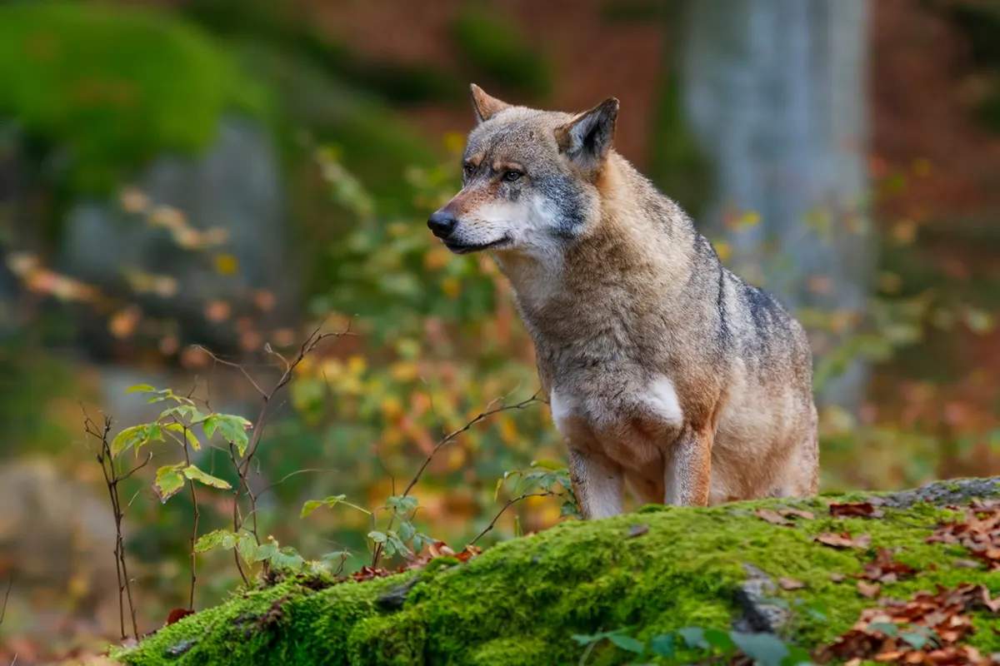
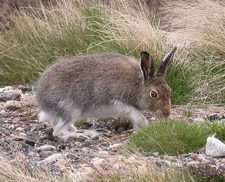
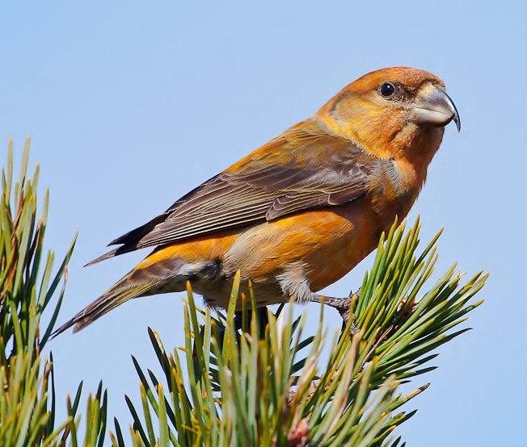

Tajga ekosistem (ali borealni gozd) je obsežen naravni sistem, ki ga določajo specifični biotski (živa narava) in abiotski (neživa narava) dejavniki. Kot ekosistem deluje kot usklajena celota, kjer rastline, živali in mikroorganizmi sobivajo v zahtevnih podnebnih razmerah severne poloble.
Tajga je največji kopenski biom na svetu, ki ga sestavljajo prostrani iglasti gozdovi. Razprostira se v subpolarnem pasu severne poloble, predvsem čez severne dele Evrazije (Sibirija, Skandinavija) in Severne Amerike (Kanada, Aljaska).


